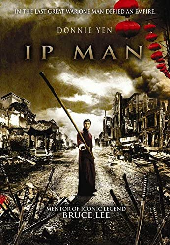

HOME
Ip Man takes place during WW2 during the time when Imperial Japan was invading China.
The movie follows a quiet, humble man before WW2, his name is Ip Man. Ip Man was a Wing Chun grandmaster and he held that title starting only when he was 20 years old!
When the movie takes a turn to the dark times of the war and Japan occupied China; Ip man uses his martial art mastery to survive.
This is movie is based on Ip Man's incredible story, in fact he was the master of martial art superstar Bruce Lee.

Directior: Wilson Yip
Company Credits: Golden Harvest Company, Beijing ShengShi HuaRei Film Investment & Management Co., China Film Co-Production Corporation
Release Date:October 1, 2010
Genre:Martial Arts, Action, Drama, Sports
Rating:[R]
Running Time:108 minutes